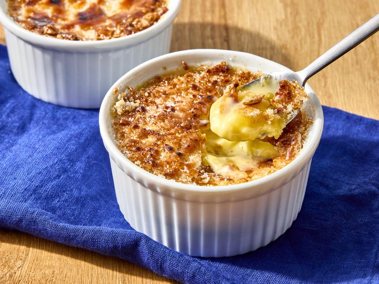

Home
Creme Brulee

Description
Creme brulee is a French dessert featuring a rich, creamy vanilla custard base topped with a layer of hardened caramelized sugar, creating a contrasting texture of smooth custard and crunchy
caramel.
Ingredients
- 3 large egg yolks
- 1/4 cup white sugar
- 1 teaspoon vanilla extract
- 1 cup heavy cream
- 2 tablespoons white sugar
- 1 tablespoon brown sugar
Steps
- Gather the ingredients. Preheat the oven to 300 degrees F. Move an oven rack to the lowest position.
-
Whisk egg yolks, 1/4 white sugar, and vanilla together in a heatproof bowl until smooth. Bring cream just to a simmer in a saucepan over medium-low heat; gradually whisk hot cream into egg
yolk mixture (a little at a time to prevent the mixture from scrambling), whisking continuously until combined.
-
Bring a couple of inches of water to a simmer in a saucepan over medium-low heat; set the bowl with cream mixture over the saucepan to form a double boiler. Cook, gently stirring with a wooden
spoon, until cream mixture thickens enough to easily coat the back of the spoon.
-
Pour hot cream into a heat-proof baking dish or individual ramekins set on a rimmed baking sheet. Place in the preheated oven; bake until mixture sets but has a slight jiggle, about 20 to 30
minutes.
- Chill in the refrigerator for 2 hours.
-
To make the topping: Preheat the oven's broiler and set the oven rack about 6 inches from the heat source. Combine 2 tablespoons white sugar and brown sugar in a small bowl; sprinkle evenly
over cold creme brulee.
- Heat under the preheated broiler until sugar melts and browns, 2 to 3 minutes; return immediately to the refrigerator and chill until sugar is set, about 15 minutes.